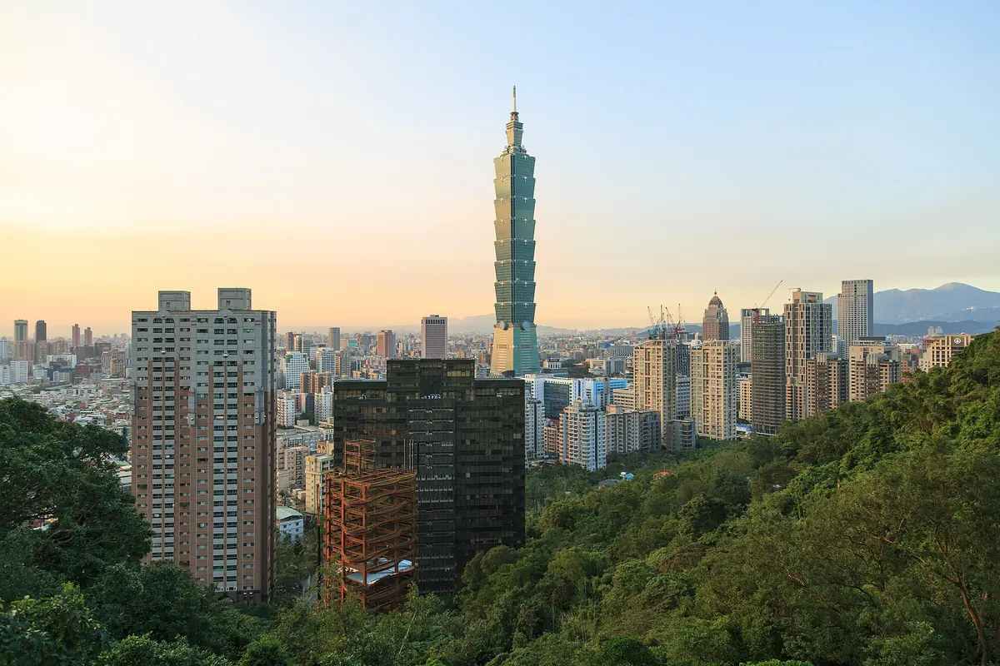

타이베이 101 전망대 입장권과 근처 맛집, 야경 보고 어디서 먹을까?
89층 전망대에서 야경을 본 다음, 걸어서 갈 수 있는 신이 지구 맛집까지 한 번에 정해보세요.
게시 · 수정
타이베이 여행에서 야경 한 번은 꼭 보고 싶다면 타이베이 101 전망대가 가장 쉬운 선택이에요. MRT역과 바로 이어져 있고, 건물 아래와 주변 신이(信義) 지구에 식당이 많아서 전망대 앞뒤로 한 끼를 붙이기 좋아요. 台北101 공식 사이트와 交通部觀光署 자료를 바탕으로 2026년 10월 기준으로 정리했어요.
01 · 타이베이 101은 어떤 곳일까
지상 101층 건물이라 '101'이라는 이름이 붙었어요. 중화권에서 길한 숫자로 여기는 8을 바탕으로 8개 층을 한 마디로 쌓아 올린 대나무 모양이에요. 저층부는 쇼핑몰이고 주변으로 백화점이 이어져 타이베이에서 가장 번화한 상권을 이뤄요.

02 · 전망대에서 꼭 볼 것
37초 엘리베이터 5층에서 엘리베이터를 타면 분속 1,010m로 약 37초 만에 382m 높이 89층 전망대에 닿아요.
윈드 댐퍼 강풍과 지진에 대비해 매달아 둔 660톤 무게의 윈드 댐퍼를 전망대 안에서 직접 볼 수 있어요.
해 질 무렵 해 질 무렵 오르면 낮 풍경과 야경을 한 번에 볼 수 있어요.
四四南村 사진 근처 옛 眷村을 살린 四四南村에서 101을 올려다보는 사진도 인기예요.
03 · 가는 법
MRT 淡水信義線 台北101/世貿역과 바로 이어져 있어요.
매표소 위치 2026년 7월 1일부터 매표소와 입구가 台北101 오피스 빌딩 1층으로 임시 이전했다고 공식 사이트에 안내돼 있어요.
04 · 운영 시간과 요금 (2026년 10월 기준)
| 내용 | |
|---|---|
| 운영 시간 | 매일 10:00~21:00, 연중무휴 |
| 일반 입장권 | NT$600(89층 전망대와 88층 출구층) |
| 어린이 | 키 115cm 이하 무료, 입장권을 산 보호자 동반 |
아이와 함께라면 타이베이 101 전망대 어린이 요금 글도 함께 보세요.
05 · 전망대 내려와서 들르기 좋은 근처 맛집
101 건물 안과 바로 옆에 지도에 등록된 가게가 여러 곳 있어요. 가장 먼 곳도 1km 안쪽이라 걸어서 갈 수 있어요. 아래 거리는 지도에 등록된 좌표로 잰 직선거리라 실제 이동 거리는 더 길 수 있어요.
Sunny Hills (타이베이 101 인근) · 베이커리 · 바로 옆 지도 메모: 펑리수 선물용으로 써니힐을 골랐고, 받은 분이 좋아해 선택이 좋았다.
하이디라오 신이점 · 훠궈 · 북동쪽 약 0.2km 지도 메모: 가족 4명이 너무 맛있게 잘 먹었다고 함.
키키레스토랑 · 대만식 · 북동쪽 약 0.2km 지도에 대만식(으)로 등록된 곳이에요.
카렌 (Karen) · 대만식 · 서쪽 약 0.3km 지도에 대만식(으)로 등록된 곳이에요.
Fake Sober Taipei · 바/펍 · 북동쪽 약 0.3km 지도에 바/펍(으)로 등록된 곳이에요.
Magma Hotpot Breeze Xinyi Branch · 훠궈 · 북쪽 약 0.8km 지도에 훠궈(으)로 등록된 곳이에요.
Hi-Lai Shanghainese Dumpling Taipei DREAM PLAZA Branch · 딤섬 · 북동쪽 약 0.8km 지도 메모: 딘타이펑 대기 대신 갔는데, 마라 완탕이 대만에서 먹은 것 중 최고였다.
가게마다 쉬는 날과 영업시간이 다르니 방문 전 구글맵에 등록된 영업시간을 확인하세요.
지도에서 타이베이 맛집도 확인해보세요
야경 일정 앞뒤로 들를 타이베이 맛집을 지도에서 함께 찜해두세요.